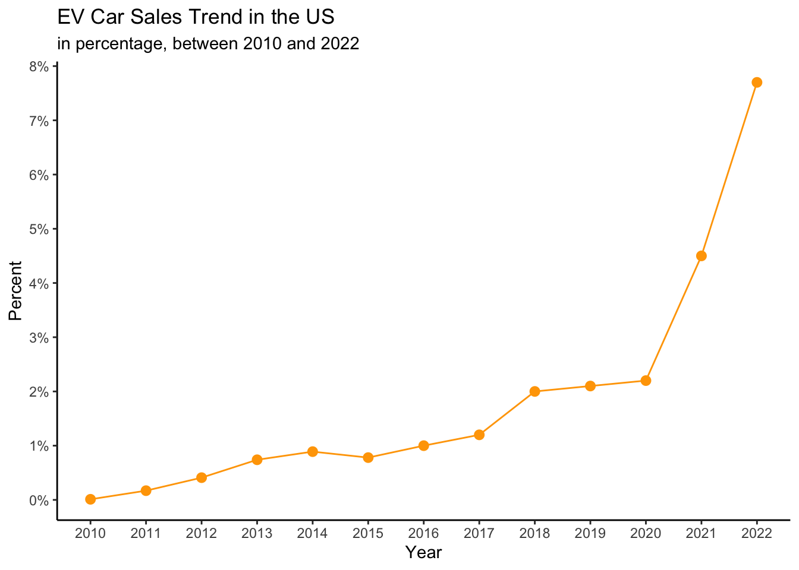
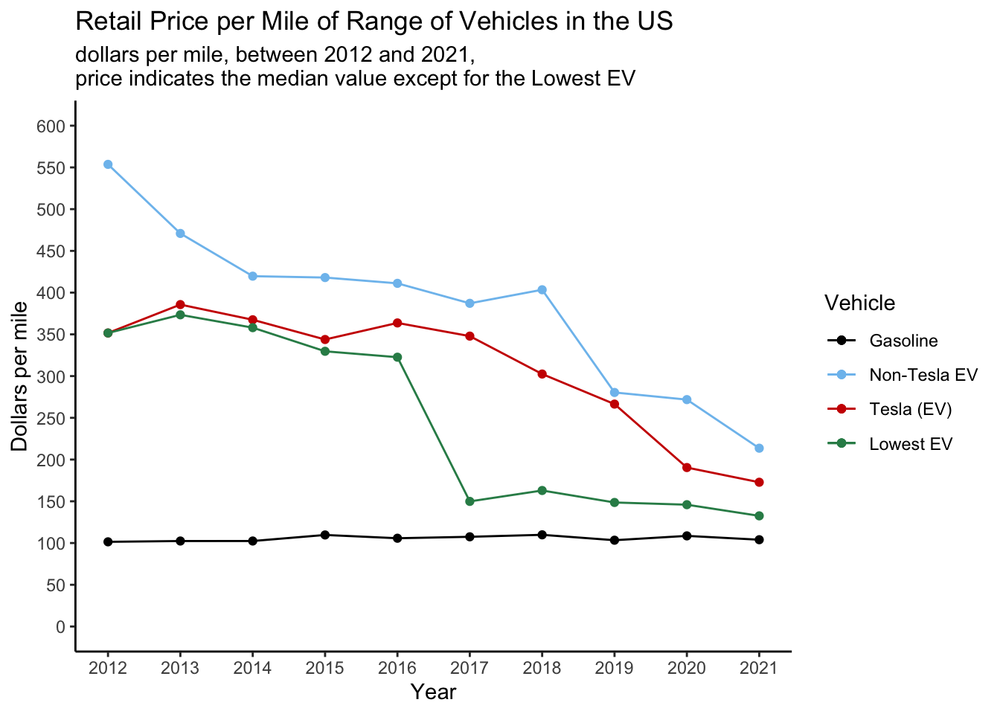
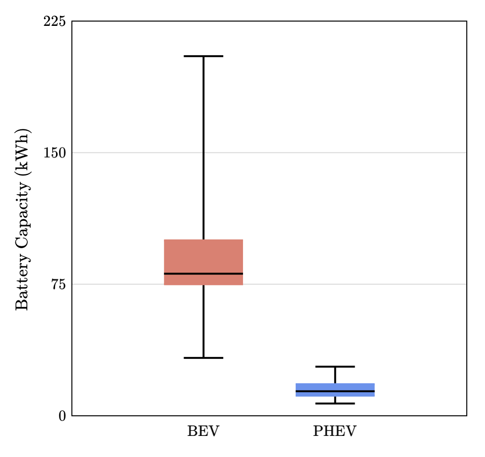
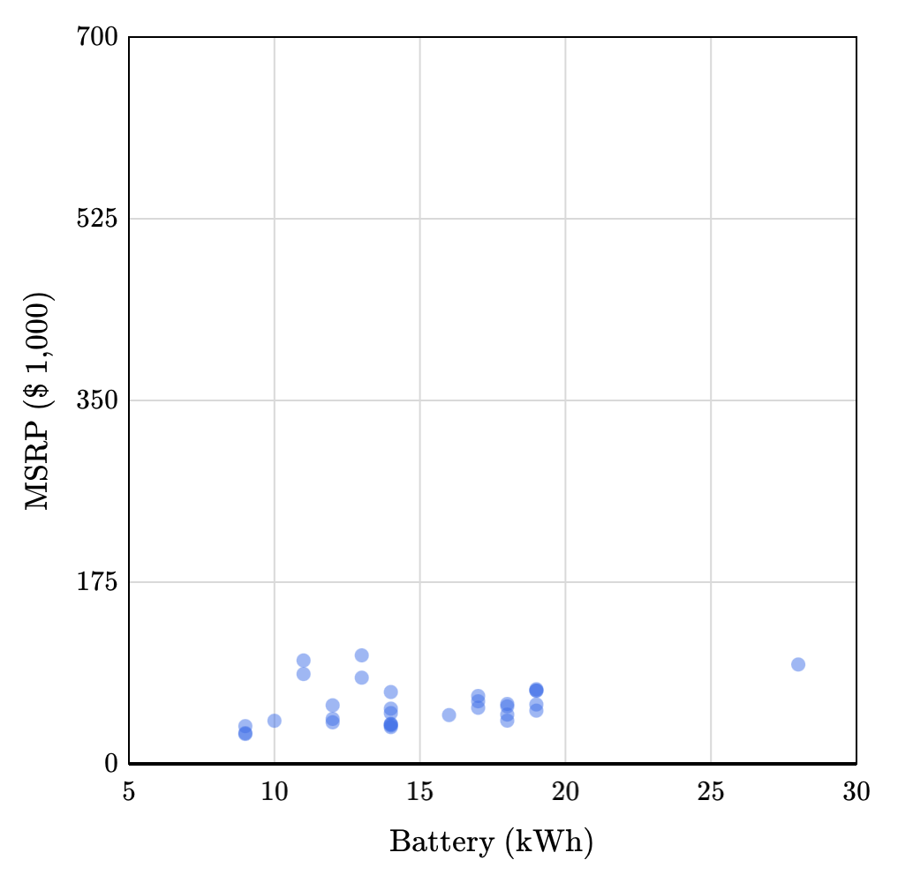
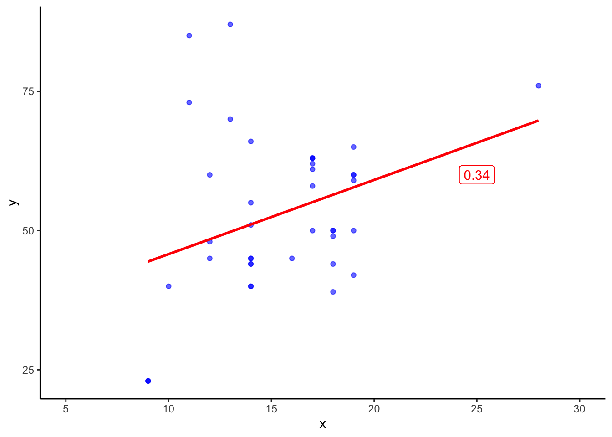
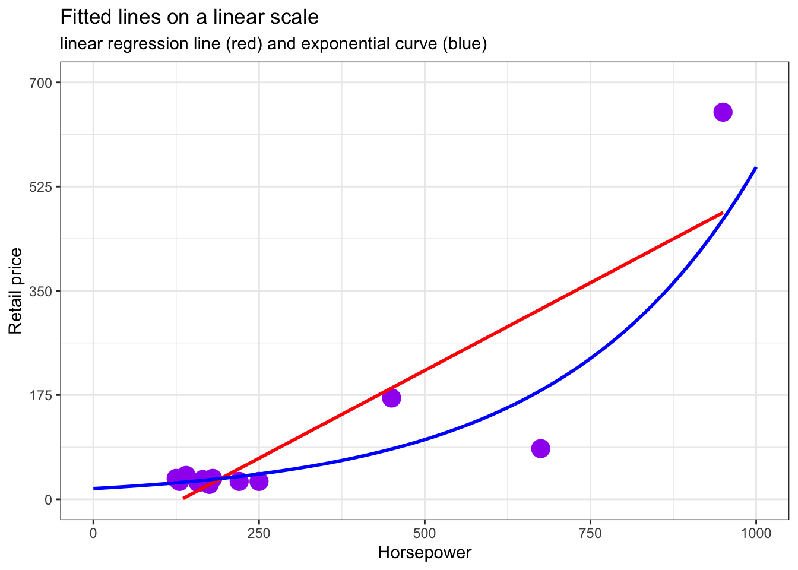
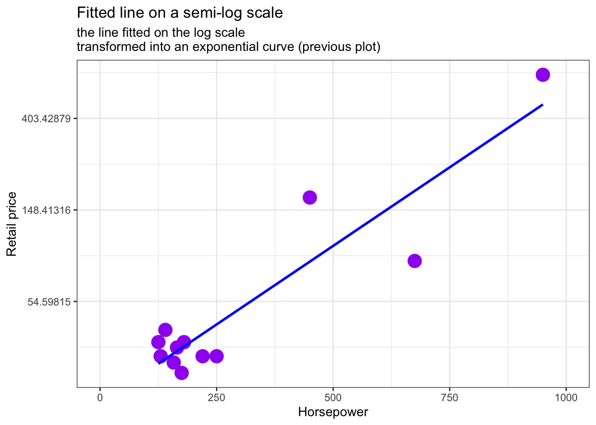
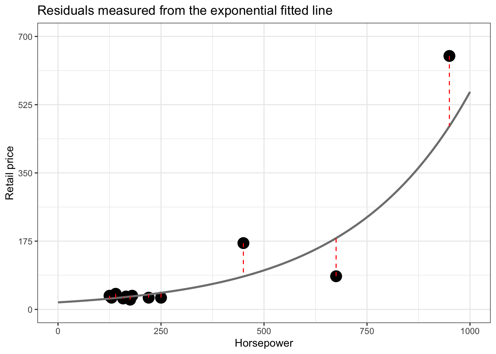
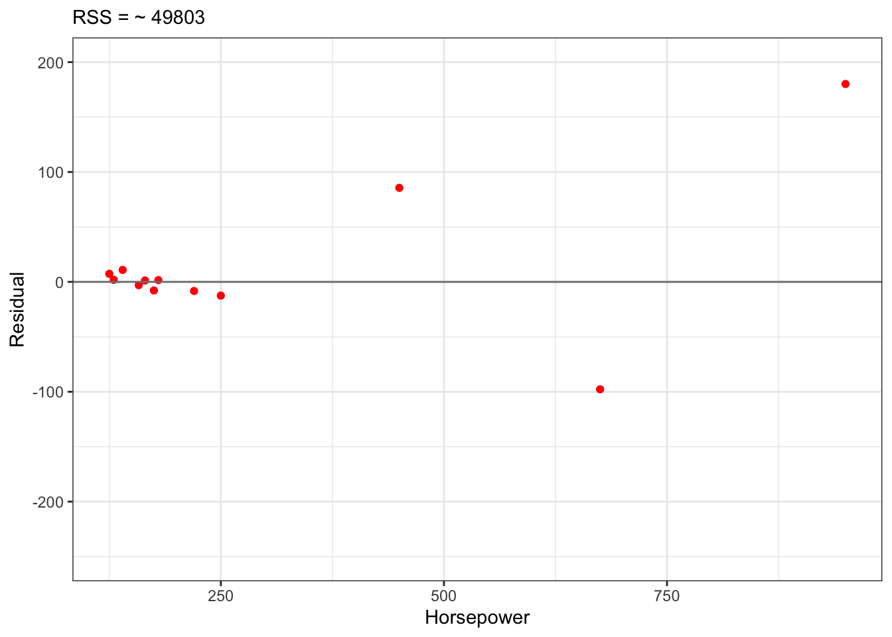

library(tidyverse)
ev_sales <- read_csv(paste("path", "to", "dataset.csv", sep = "/"))Maximizing Electric Car Value
A brief case study on exploring trends with applications of Linear Regression
Preamble
This brief case study aims to provide insights on Electric Vehicles sales and retail price. The study was inspired and guided by a course on Brilliant [1]. After completing it on the learning platform, I decided to single-handedly recreate the report using R language.
While for the first two insights, I could get direct access to the datasource that was used in the course, for the subsequent insights, the underlying data was an aggregated one from various sources. The first two insights, therefore focus on importing, transforming, and visualizing the available dataset. For the subsequent ones, however, hard copies of plots and graphs had been provided and the focus has been shifted from processing the data to interpreting characteristics and statistics of it in more details.
Report Overview



Sales Trend in the US
The data sources from the Global EV Outlook of IEA.
Question: How does EV car sales compare to non-EV sales?
The results are covered by Figure 1 (a).
Data Import
The data is imported from a CSV file using the read_csv function from the tidyverse package.
Characteristics of the dataset
It contains aggregated historical values for electrical cars including sales and sales share information for various aspects combined in individual rows.
The dataset has the following columns:
[1] "region" "category" "parameter" "mode" "powertrain"
[6] "year" "unit" "value" The columns have syntactic names which suit the following operations on the dataset without the need of correcting them.
Data Transformation
Simply importing this dataset into R would result in character and numerical variables. However, there are categorical variables with a well-defined set of possible values: region, category, parameter, mode, powertrain, unit.
These variables can be converted into a more suitable type called factor with the following mutation operation.
ev_sales <- ev_sales |>
mutate(region = factor(region),
category = factor(category),
parameter = factor(parameter),
mode = factor(mode),
powertrain = factor(powertrain),
unit = factor(unit))Data Filtering
Since the dataset contains multiple regions around the world and aspects of sales, we need to filter for the data related to the US and sales share as follows.
us_sales_share <- ev_sales |>
filter(region == "USA" & parameter == "EV sales share")Data Visualization
To achieve the above graph, I used ggplot from the ggplot2 package with the layers of geom_point and geom_line.
ggplot(us_sale_share, aes(x = year, y = value)) +
geom_point(col = "orange", size = 2.5) +
geom_line(col = "orange")As the mapping argument of ggplot shows above, the abscissa is set to the scale of year and the ordinate is to the value of sales share in percent.
Scales of the axes have been set up to show 1-step breaks. To indicate that the y-axis is expressed in percent, I used the label_percent function from the package scales with a scale of 1 as follows:
library(scales)
ggplot(...) +
... +
scale_x_continuous(breaks = seq(2010, 2022)) +
scale_y_continuous(breaks = seq(0, 8), labels = label_percent(scale = 1))Finally, to give a simple appearance to the visual, I enabled a classic theme.
ggplot(...) +
... +
theme_classic()Retail Price per Mile trend in the US
The data sources from the report of Electric vehicles gain ground but still face price, range, charging constraints.
Question: How did retail price per mile of range change over the last decade or so?
The results are covered by Figure 1 (b).
Data Import
The data is imported from a CSV file just like before.
library(tidyverse)
dollars_per_mile <- read_csv(paste("path", "to", "dataset.csv", sep = "/"))Characteristics of the dataset
It contains historical median values of dollars per mile of range for different types of vehicles. The last column, however, contains the lowest EV price / miles indicator.
The dataset has the following columns:
[1] "Year"
[2] "Gasoline vehicles"
[3] "Electric vehicles (excluding Tesla)"
[4] "Tesla"
[5] "Electric vehicles (lowest MSRP/range)"Most of the columns contain space character, that is, they have non-syntactic name, however, no column requires to be transformed into a factor variable.
Data Transformation
To make it convenient to work with the dataset, the column names shall be transformed.
There are multiple ways to transform column names into syntactic ones. One approach uses an automatic transformation with the help of janitor::clean_names(), while the other one is a manual approach with the rename function.
library(janitor)
dollars_per_mile |>
janitor::clean_names()[1] "year" "gasoline_vehicles"
[3] "electric_vehicles_excluding_tesla" "tesla"
[5] "electric_vehicles_lowest_msrp_range"Since the above column names seem to be too long, I have decided to go with the manual approach.
dollars_per_mile <- dollars_per_mile |>
rename(
year = "Year",
gasoline = "Gasoline vehicles",
ev_no_tesla = "Electric vehicles (excluding Tesla)",
ev_tesla = "Tesla",
ev_lowest = "Electric vehicles (lowest MSRP/range)"
)[1] "year" "gasoline" "ev_no_tesla" "ev_tesla" "ev_lowest" Data Filtering
Since the data of different vehicle types are separated by columns not rows, there is no need for filtering. When the types are needed to be separated, the geom layer shall use the appropriate variable in its mapping.
Data Visualization
To achieve the above plot, I used pairs of layers of geom_point and geom_line for all the four indicators as follows.
ggplot(dollars_per_mile, aes(x = year)) +
# Gasoline
geom_point(aes(y = gasoline, col = "1")) +
geom_line(aes(y = gasoline, col = "1")) +
# EV non-Tesla
geom_point(aes(y = ev_no_tesla, col = "2")) +
geom_line(aes(y = ev_no_tesla, col = "2")) +
# EV Tesla
geom_point(aes(y = ev_tesla, col = "3")) +
geom_line(aes(y = ev_tesla, col = "3")) +
# Lowest EV indicator
geom_point(aes(y = ev_lowest, col = "4")) +
geom_line(aes(y = ev_lowest, col = "4"))The abscissa is set to the scale of year and the ordinate is to the dollars per mile. Since the variable on the x scale is universal for all the layers, I specified it in the mapping of ggplot itself and extended the mapping with the appropriate y variable specification in case of each different indicator.
Scales of the axes have been set up to show 1 and 50-step breaks for x and y, respectively.
ggplot(...) +
... +
scale_x_continuous(breaks = seq(2012, 2021)) +
scale_y_continuous(breaks = seq(0, 600, by = 50), limits = c(0, 600))To highlight the layers with different colors, I specified the color mapping attribute of each geom_point and geom_line with an ordered sequence and then based on that I specified the colors manually. Also, a readable label has been added to each of these colored groups.
ggplot(...) +
...
geom_point(aes(..., col = "1")) +
geom_line(aes(..., col = "1")) +
... +
scale_color_manual(
values = c("black", "skyblue2", "red3", "seagreen"),
labels = c("Gasoline", "Non-Tesla EV", "Tesla (EV)", "Lowest EV")
)Finally, to give a simple appearance to the visual, I enabled a classic theme as I did in the case of the previous case.
Exploring drivers of Retail Price
According to the previous insight, the price gap between gasoline and EV cars are closing.
Question: What characteristics of EVs determine their price?
Note
The following data plots and related statistics in this section are from the datasource of the case-study of Brilliant.
One could assume that for an EV, battery capacity and range characteristics are main drivers of retail price. To determine if there is a relationship between these variables, one could take a look at their correlation.
Warning
Correlation only indicates how strong the linear relationship (if there is any) is between the observed variables.
Retail price correlation
EPA Range -0.10
Battery (kWh) -0.07Both of the above correlations show weak or no relationship with retail price. Moreover, they are both negative.
How could it be that neither battery nor range seems to drive retail price and the little correlation coefficient they have is even negative?
To find the answer for the question, it is advisable to take a look at these two variables plotted with retail price.
In the plots of Figure 2 and Figure 3, the data points are scattered around with two characteristics:
- there are data clusterings with gaps between them
- most of the data are clustered in a rectangular-ish shape, that is, there is low if any covariance between the plotted variables
- there are a few but extreme outliers
These characteristics might indicate the following:
- intermingled sub-populations in the dataset
- the absence of covariance resulting in the absence of correlation presented above
Taking a look at one of these oddly scattered characteristics in more details, the battery capacity, its histogram in Figure 4 further cements the idea that grouping takes place in between the data points. It seems that the dataset conveys data points related to sub-populations based on battery capacity.
It turns out the dataset can be indeed divided into two distinct parts: BEVs (Battery EV) and PHEVs (Plug-in Hybrid EV). PHEVs have smaller battery capacity than BEVs. This is depicted in Figure 5.
It is expected that separating the dataset by the above aspect would result in a stronger correlation.
Retail price correlation Coefficient of determination
BEV EPA Range 0.6400 0.4096
BEV Battery (kWh) 0.6600 0.4356
PHEV EPA Range -0.4400 0.1936
PHEV Battery (kWh) -0.3300 0.1089In case of BEVs, the correlation makes much more sense. It appears that battery capacity has a moderate relationship with retail price with a correlation coefficient of 0.66 and a coefficient of determination of 44%.
Warning
Overview definition of coefficient of determination. Refine my thoughts.
However, in the case of PHEVs, the correlation values are still negative. Moreover, being closer to -1, they now show stronger yet still weak sign of a linear relationship between the data points. In this case the correlation coefficient and the coefficient of determination are -0.33 and 11%, respectively.
Taking a look at the scatter plot could help once again.
The scatter plot shows that there are extreme expensive PHEVs with a relatively low-capacity battery. As the battery capacity increases there is a negative trend in these expensive outliers, however, where the data is clustered within the lower parts of the ordinate we might find the answer we are looking for.
Deleting the outliers with expensive retail price, and looking only at the remaining data points might show some trend.
Warning
The source highlights that deleting outliers is not a common task and could lead to fault in predictions, however, in this case, the outliers are high-end luxury cars that we decided to ignore this time.


As the left plot above depicts, ignoring outliers and keeping the limits of the scales unchanged, the data points seem to follow a trend. However, once we move the data points into zoom, as in the right plot, our opinion changes instantly. The correlation and coefficient of determination are the following:
Retail price correlation Coefficient of determination
PHEV Battery (kWh) 0.3400 0.1156It appears, unlike BEVs, the battery capacity - even when outliers are ignored - is still not a strong indicator of PHEVs retail price in terms of a linear relationship.
Looking for a better driver for PHEVs
Retail price correlation Coefficient of determination
PHEV Battery 0.34 0.12
PHEV Horsepower 0.82 0.67Looking at the PHEV variables and their correlation with retail price, there is horsepower with a correlation coefficient of \(0.82\). With such a strong correlation and a coefficient of determination of \(0.67\), it appears that there is a decent relationship between retail price and horsepower. As horsepower increases so does retail price tend to increase, the question is what shape this relationship can be explained by?
Looking at the scatter plot of these two variables, it appears that the difference between retail prices gets bigger and bigger as horsepower increases, therefore a linear model might not best explain the data as depicted in Figure 10. Instead, the plot suggests that the association follows an exponential trend.
Tip
Switching to a log scale might help in acquiring the suspected non-linear model.


As expected the exponential curve better fits the dataset than the linear line. The resiudal sum of squares (RSS) additionaly shows the difference as follows:
RSS
Linear fit 89904.70
Exponential fit 49802.94



Concepts
While creating this report, numerous topics and concepts arose that I wanted to explicitly summarize here. Some of them had been covered in more details in my writing entitled as ‘A Personal Paper on Statistics and its Real World Applications’.
- correlation
- coefficient of determination
- logarithmic scale
- residuals
- residual sum of squares (RSS)
References
[1]
“Case study: Maximizing electric car value,” Brilliant. Available: https://brilliant.org/courses/capstone-pricing-electric-vehicles
[2]
“Exploring EV correlations, case study: Maximizing electric car value,” Brilliant. Available: https://brilliant.org/courses/capstone-pricing-electric-vehicles
[3]
“Exploring data subpopulations, case study: Maximizing electric car value,” Brilliant. Available: https://brilliant.org/courses/capstone-pricing-electric-vehicles
[4]
“Battery electric vehicles, case study: Maximizing electric car value,” Brilliant. Available: https://brilliant.org/courses/capstone-pricing-electric-vehicles
[5]
“Plug-in hybrid electric vehicles, case study: Maximizing electric car value,” Brilliant. Available: https://brilliant.org/courses/capstone-pricing-electric-vehicles